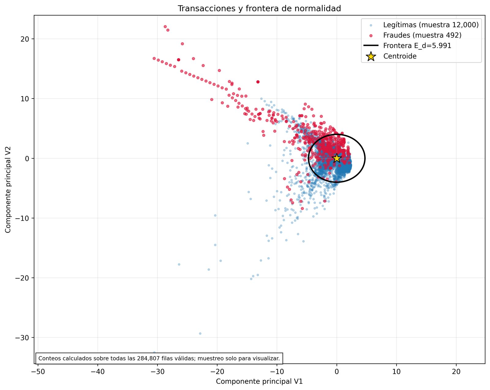
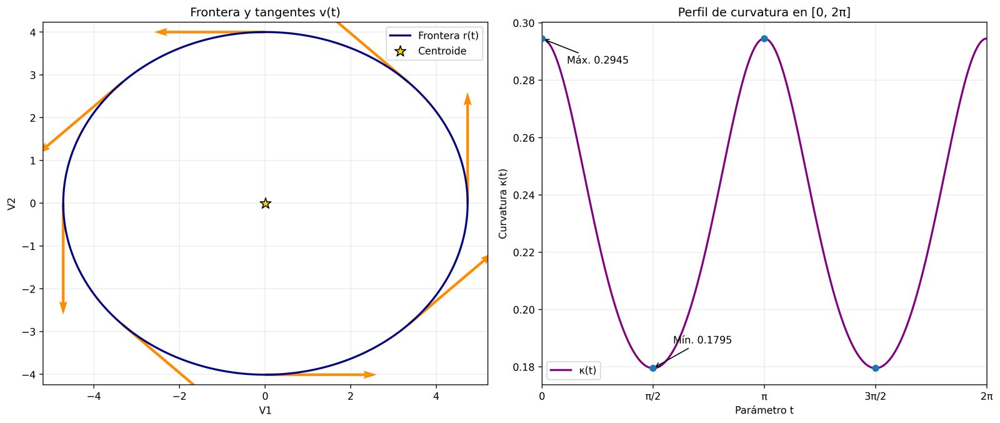
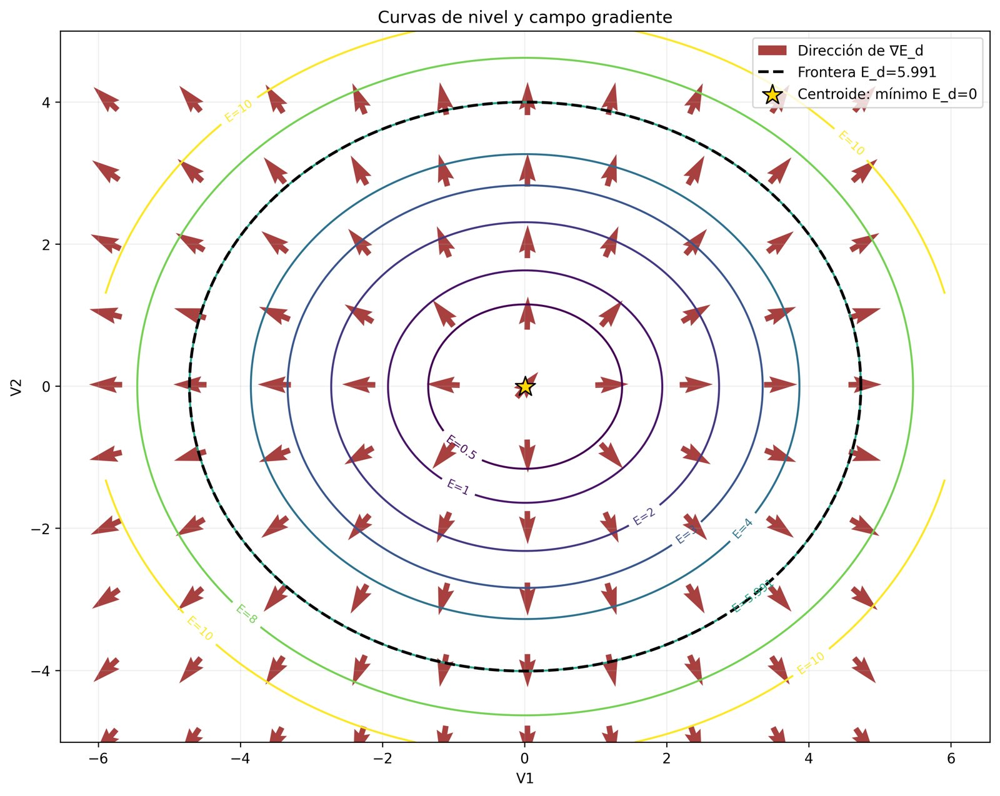
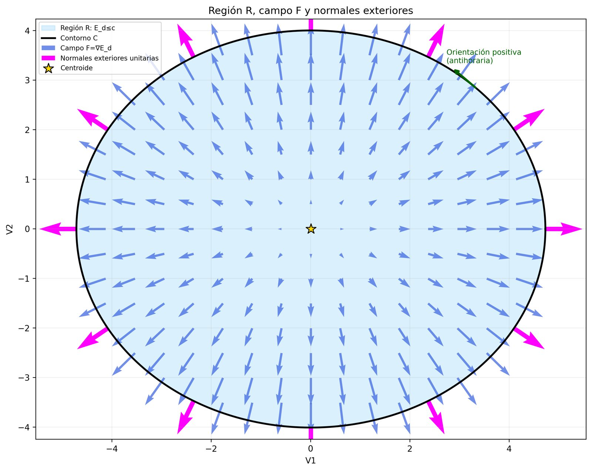

Cálculo II · TPAG 2026 · Grupo N.º 2
Geometría de la elipse que separa lo habitual de lo sospechoso en el plano de componentes principales V₁–V₂ de 284.807 transacciones con tarjeta.
El problema
En un flujo habitual de pagos, menos del 0,2 % de las operaciones son fraudulentas. Un clasificador supervisado tiende a aprender la clase mayoritaria y a ignorar el resto.
El informe toma otro camino: describir con rigor la masa de operaciones legítimas y trazar a su alrededor una frontera geométrica. Lo que cae afuera es una alerta.
Datos: ULB / Kaggle, Credit Card Fraud Detection.

El modelo
Para cada transacción se mide cuántas desviaciones estándar se aleja del centroide de las operaciones legítimas, en cada componente:
\[E_d(V_1,V_2)=\frac{(V_1-\mu_1)^2}{\sigma_1^2}+\frac{(V_2-\mu_2)^2}{\sigma_2^2}\]
La frontera es la curva de nivel \(E_d=c\) con \(c=5{,}991\), el percentil 95 de una \(\chi^2\) con 2 grados de libertad. Es una elipse alineada con los ejes, de semiejes
\[a=\sigma_1\sqrt c\approx 4{,}7235\qquad b=\sigma_2\sqrt c\approx 4{,}0047\]
Modelo diagonal. La covarianza observada entre V₁ y V₂ es 0,0710 y la correlación apenas 0,0225. Se desprecia el término cruzado: es una aproximación diagonal de Mahalanobis.
Parámetros · transacciones legítimas (N = 284.315)
| V₁ | V₂ | |
|---|---|---|
| Media μ | 0,00825774 | −0,00627086 |
| Desvío σ (ddof = 1) | 1,92981405 | 1,63614605 |
| Semieje | a = 4,72351310 | b = 4,00471605 |
Las tres unidades del curso se apoyan en esta única curva: se la parametriza (Unidad 1), se estudia la superficie \(E_d\) que la genera (Unidad 2) y se integra sobre la región que encierra (Unidad 3).
Unidad 1 · Funciones vectoriales
Bajá por la página: el parámetro t avanza de 0 a 2π en cada paso y la figura sigue al punto que recorre la elipse.
Paso 1 · parametrización
La frontera se describe con un solo parámetro angular, centrada en el centroide \(\vec\mu\):
\[\vec r(t)=\langle \mu_1+a\cos t,\ \mu_2+b\sin t\rangle,\quad t\in[0,2\pi]\]
Abajo: las dos componentes en función de t.
Paso 2 · cinemática
Derivar componente a componente da el vector tangente; derivar otra vez, la aceleración, que apunta siempre al centroide:
\[\vec v(t)=\langle -a\sin t,\ b\cos t\rangle,\qquad \vec a(t)=-(\vec r(t)-\vec\mu)\]
La rapidez \(\lVert\vec v\rVert=\sqrt{a^2\sin^2t+b^2\cos^2t}\) es máxima en el eje mayor.
Paso 3 · curvatura
\[\kappa(t)=\frac{ab}{\left(a^2\sin^2t+b^2\cos^2t\right)^{3/2}}\]
El círculo punteado es el osculador, de radio \(1/\kappa\). Es más cerrado en los vértices del eje mayor \((\kappa_{\max}=a/b^2\approx0{,}2945)\) y más abierto en los del menor \((\kappa_{\min}=b/a^2\approx0{,}1795)\).
Paso 4 · longitud de arco
\[L=\int_0^{2\pi}\lVert\vec v(t)\rVert\,dt\approx 27{,}4671\]
Es una integral elíptica completa de segunda especie: no tiene primitiva elemental, así que se evaluó numéricamente con scipy.integrate.quad. La curva coloreada es lo recorrido hasta t.
Unidad 2 · Funciones de varias variables
Las elipses son curvas de nivel de \(E_d\). En los pasos 2 y 4 también podés mover el cursor sobre la figura.
Paso 1 · curvas de nivel
Los niveles \(E_d=k\) son elipses concéntricas de semiejes \(\sigma_1\sqrt k\) y \(\sigma_2\sqrt k\). La línea punteada es el umbral \(c=5{,}991\); el interior es la región de normalidad.
Paso 2 · gradiente
\[\nabla E_d=\Big\langle \tfrac{2(V_1-\mu_1)}{\sigma_1^2},\ \tfrac{2(V_2-\mu_2)}{\sigma_2^2}\Big\rangle\]
Es perpendicular a cada curva de nivel (el segmento corto es la tangente) y se hace más largo cuanto más lejos está el punto del centroide.
Mové el cursor sobre la figura para evaluar cualquier punto.
Paso 3 · derivada direccional
\[D_{\vec u}E_d=\nabla E_d\cdot\vec u\]
En el vértice del eje mayor \(P=(\mu_1+a,\mu_2)\) el gradiente es \(\langle 2\sqrt c/\sigma_1,\,0\rangle\). Con \(\vec u=\langle1,0\rangle\) vale \(2\sqrt c/\sigma_1\approx2{,}5367\), el máximo posible. Girá \(\vec u\) y la tasa cae como un coseno, hasta anularse a 90°.
Paso 4 · hessiana
El único punto crítico es \(\nabla E_d=\vec 0\), el centroide. La hessiana es constante y diagonal:
\[H=\begin{pmatrix}0{,}5370&0\\0&0{,}7471\end{pmatrix},\quad \det H\approx0{,}4012>0\]
Como \(H\) es definida positiva en todo ℝ², la superficie es estrictamente convexa y \(E_d(\vec\mu)=0\) es el mínimo global.
Mové el cursor: el error baja hacia 0 en el centroide.
Unidad 3 · Integrales múltiples y campos vectoriales
Dos cálculos sobre la misma región \(R=\{E_d\le c\}\): la probabilidad que encierra y el flujo del campo de anomalía por su borde.
Paso 1 · masa de probabilidad
Con \(V_1=\mu_1+\sigma_1 r\cos\theta\), \(V_2=\mu_2+\sigma_2 r\sin\theta\) el jacobiano es \(\sigma_1\sigma_2 r\) y la elipse se vuelve el rectángulo \(0\le r\le\sqrt c\):
\[\begin{aligned}M&=\int_0^{2\pi}\!\!\int_0^{\sqrt c}\frac{e^{-r^2/2}}{2\pi\sigma_1\sigma_2}\,\sigma_1\sigma_2 r\,dr\,d\theta\\&=1-e^{-c/2}\approx 0{,}9500\end{aligned}\]
La región crece con r; abajo se acumula la masa \(M(r)=1-e^{-r^2/2}\).
Paso 2 · campo y normales
Sobre el contorno C, orientado en sentido antihorario, la normal exterior unitaria es proporcional a \(\langle b\cos t,\ a\sin t\rangle\). La divergencia del campo es el laplaciano y resulta constante:
\[\nabla\!\cdot\!\vec F=\Delta E_d=\frac{2}{\sigma_1^2}+\frac{2}{\sigma_2^2}\approx1{,}2841\]
Paso 3 · Teorema de Green
\[\begin{aligned}\Phi&=\oint_C\vec F\cdot\vec n\,ds=\iint_R\nabla\!\cdot\!\vec F\,dA\\&=1{,}2841\times\pi ab\approx76{,}3133\end{aligned}\]
La figura acumula la integral de contorno a medida que t recorre la frontera. Llega a 76,3133, el mismo valor que divergencia por área; la diferencia es del orden de 10⁻¹⁴.
Evaluación sobre el dataset completo
Regla de decisión: una transacción es alerta si \(E_d>5{,}991\). Conteos sobre las 284.807 filas.
| Categoría | Dentro (Ed ≤ c) | Fuera (Ed > c) | Total |
|---|---|---|---|
| Legítimas | 272.572 | 11.743 | 284.315 |
| Fraudes | 258 | 234 | 492 |
| Total | 272.830 | 11.977 | 284.807 |
Filtro, no bloqueador. De cada 100 alertas, unas 98 son operaciones legítimas inusuales. Además, 258 de los 492 fraudes se comportan como compras normales en V₁ y V₂ y solo se separarían con más de las 28 componentes disponibles. La elipse sirve como primer nivel de revisión.
La masa teórica es 95,00 % y empíricamente cae el 95,87 % de las legítimas: la diferencia refleja que V₁ y V₂ no son exactamente normales ni independientes.
Conclusiones


